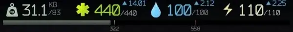
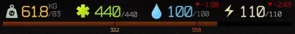

Player Encumbrance Bar
- Downloads
- 86,580
- Favourites
- 85
- Mod lists
- 213
Notice: I’m stepping back from my SPT mods for now and have added some known community authors in the case that I am out of touch, which is very likely to happen in the next months. These authors are not obligated to anything, just want to make sure that someone can add a maintainer in the future. My SPT projects were started to keep me occupied after a death in my immediate family and I’ve lost interest in Tarkov for now.
Finally be able to see exactly how close to overweight you are and how much more you could pocket away! Tick marks are at overweight and the point that walking will drain stamina.

Always know your carry weight and how close you are to breakpoints
**

Updates dynamically with stims and level ups
If you’re enjoying the mod or have a suggestion, please leave a comment**!**
Installation
- Drag folder from zip file directly into your SPTinstall folder
Configuration
- Display Breakpoint Text: If text for each tick mark breakpoint should be displayed
Recommended Other UI Mods
- Tyfon’s UI Fixes
- DrakiaXYZ’s Equip from Weapon Rack, Quick Move to Containers, Quest Tracker, Task List Fixes
- ChooChoo’s Trader Modding and Improved Weapon Building
- CJ’s Stash Search, which I have contributed to
- My other mod Quick Weapon Rack Access
Version
1.2.2
- The bar will now show in the main menu again
Version
1.2.1
- Fixed nullref when inspecting yourself / other players at the loading screen
Version
1.2.0
- Updated for 4.0
Version
1.1.3
- Updated for 3.11
Version
1.1.2
- Updated the mod for 3.10.2 since the original repo was removed
nuked from forge, try source code url
Version
1.1.1
SPT 3.10.0
Updated by CathieNova, thanks!
nuked from forge, try source code url
Version
1.1.0
For SPT 3.9.* and after
Changelog
- Updated for SPT 3.9.*, no other changes
SHA-256: ce028bab1995320dc45807e3cd39764b2aad7048c02957893b5cd78ba546f731
VirusTotal Results
Very little testing done on this, let me know if you run into issues
Version
1.0.5
For SPT-AKI 3.8.* though it may work with other versions
Changelog
- Fix potential NRE that might be triggered by Realism
Please report bugs on GitHub, on the SPT-Hub in the comments, or ping me in the SPT Discord.
SHA-256: 39641c81ba9f340a67509bfd17be4433eb90f400a37dd06a4264d05ddf0ce227
VirusTotal Results
Version
1.0.4
For SPT-AKI 3.8.0 or 3.8.1, though it may work with other versions
Changelog
- Fix bar not working as intended when playing as scav
Please report bugs on GitHub, on the SPT-Hub in the comments, or ping me in the SPT Discord.
Version
1.0.3
For SPT-AKI 3.8.0 or 3.8.1, though it may now work with other versions
Changelog:
- MISC: An effort has been made to make this mod generic and support as many versions of SPT-AKI as possible
-
No support will be given for any version of SPT-AKI other than the current major release
-
At the time of this release, that is SPT-AKI 3.8 (both 3.8.0 and 3.8.1
-
Please report bugs on GitHub, on the SPT-Hub in the comments, or ping me in the SPT Discord.
Version
1.0.2
For SPT-AKI 3.8.0
Hope people are enjoying the mod! Very minor fixes in this one
Changelog:
- FIX: Stims should now properly tween/animate
- FIX: Resolved NRE if entering raid without looking at inventory first. Note: did not effect any functionality
- MISC: Moved to exact match of .net version and C# version
Please report bugs on GitHub, on the SPT-Hub in the comments, or ping me in the SPT Discord.
Version
1.0.1
For SPT-AKI 3.8.0
Changes
- Fix stims/health effects not affecting display
MAY BE BUGGY! PLEASE REPORT ALL ISSUES!